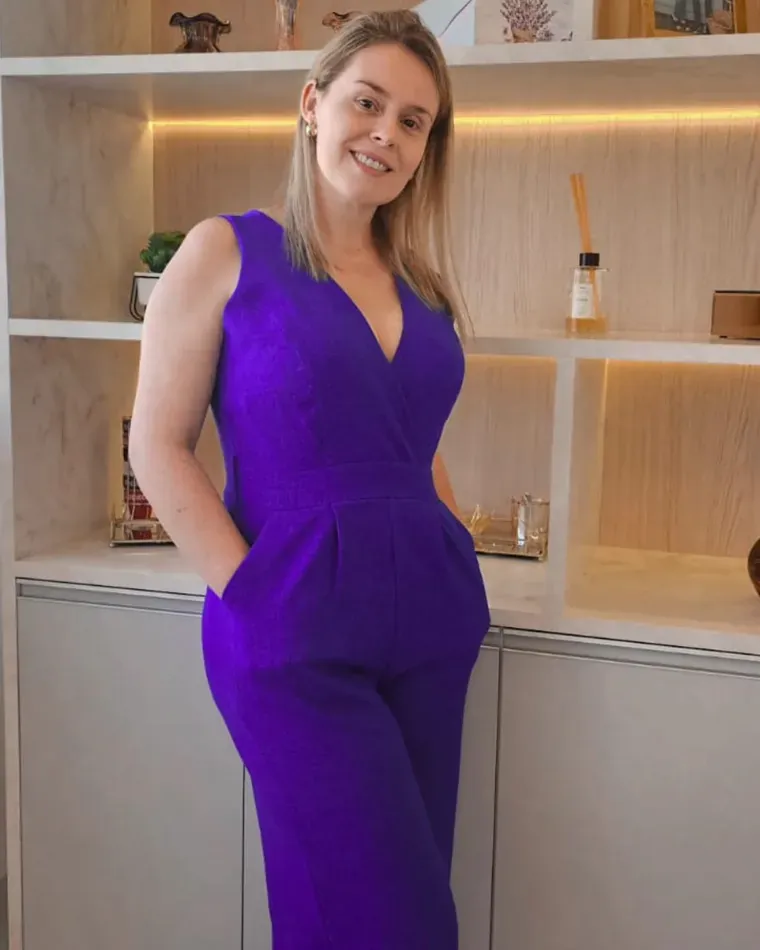

Crescer bem.
Comer bem.
Do primeiro dia aos 18 anos.
Uma pediatra que também é nutróloga: na mesma consulta, ela acompanha o crescimento, o desenvolvimento e a alimentação do seu filho.
Quando é a próxima consulta do seu filho?
Informe a data de nascimento e veja o calendário de rotina, onde ele está agora e o que a consulta desta fase vai olhar.
- Crescimento e desenvolvimento
- Alimentação
- Vacinas em dia
Calendário mínimo do Ministério da Saúde: 1ª semana, 1, 2, 4, 6, 9, 12, 18 e 24 meses, e depois uma consulta por ano, perto do aniversário. A Dra. ajusta a frequência para cada criança.
Do primeiro prato
à lancheira da escola.
Cada fase tem um desafio diferente à mesa. Escolha a do seu filho.
Introdução alimentar sem medo
O primeiro prato abre uma relação com a comida que dura a vida toda. A Dra. orienta o que oferecer, em que textura e como lidar com a recusa, sem transformar a refeição em batalha.
- Somente leite materno até os 6 meses e amamentação até 2 anos ou mais.
- A partir dos 6 meses, alimentos in natura ou minimamente processados.
- Nada de açúcar nem mel antes dos 2 anos.
Para a criança que “não come nada”
Recusar alimentos é comum nessa fase. Na consulta, a Dra. avalia se o crescimento está adequado e monta com a família estratégias práticas para ampliar o cardápio.
- Ofereça o mesmo alimento várias vezes, de formas diferentes.
- Refeição em família, à mesa e sem telas.
- Traga suas dúvidas: cada criança tem um caminho.
Lancheira, esporte e estirão
Peso, crescimento, energia para a escola e para o esporte, e a relação com o próprio corpo na adolescência. Tudo isso conversado com a família e com o próprio jovem.
- Curva de crescimento e de peso ao longo dos anos.
- Lancheira e rotina alimentar da semana.
- Alimentação e imagem corporal na adolescência.

Como é uma consulta, do começo ao fim.
- Você agenda com a MelPelo WhatsApp. Precisa de horário depois das 18h ou no sábado? Também dá.
- Manda as dúvidas antesUse o bloco de dúvidas aqui embaixo. Nada fica esquecido na hora.
- Traz a cadernetaA Dra. confere as vacinas e anota peso, altura e desenvolvimento.
- Crescimento, desenvolvimento e pratoUma consulta que olha a criança inteira, incluindo o que ela come.
Aquela pergunta que some na hora da consulta.
Anote aqui. Ela vira uma mensagem pronta para a Mel, que já deixa tudo separado para a Dra.
Onde a gente se encontra.
Rua Néo Alves Martins, 3176 · 13º andar, sala 134Zona 03 · Maringá, PR · 87013-060
Horários especiais depois das 18h e aos sábados, combinados com a Mel.